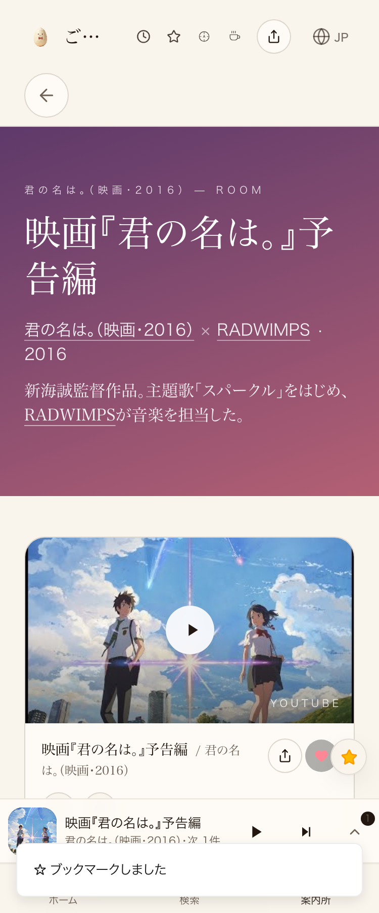
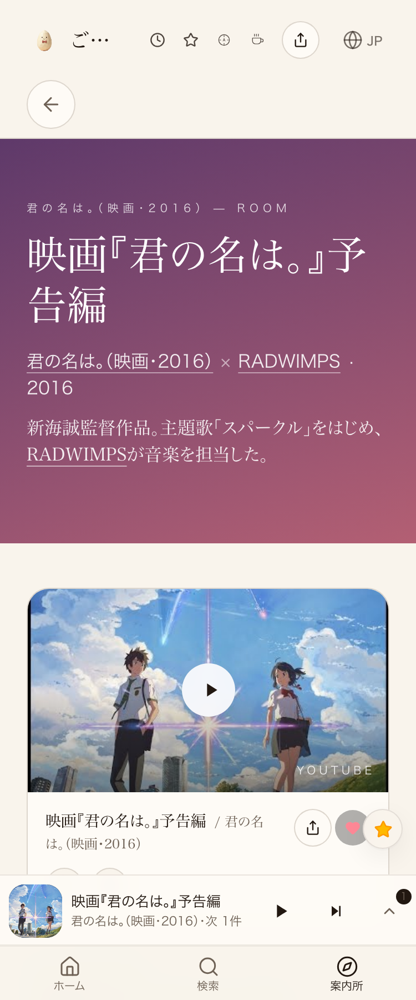

← 進捗表に戻る
共有資料の一覧
／ 確認ページ #34821 CM・映画タイアップの厚み付け（君の名は。/天気の子/魔女の宅急便）＋触る検品の誤判定を修正
#34821 CM・映画タイアップの厚み付け（君の名は。/天気の子/魔女の宅急便）＋触る検品の誤判定を修正
2026-10-09 実装・main合流・本番(GitHub Pages)反映まで実測確認
映画3本（君の名は。／天気の子／魔女の宅急便）の予告編を新規仕入れし、原曲（RADWIMPSスパークル・愛にできることはまだあるかい／松任谷由実ルージュの伝言）と双方向リンク。Lovable公開済み・本番反映済み。今回さらに、触る検品(2段目)が「ページの操作を開く」ボタンを無反応と誤検知していた原因を実機スクショで特定：曲再生中は同じ
が別の役割（プレーヤーを開く）に切り替わる仕様のため、検品が切替後の古い参照をクリックしていただけだった（実装バグではない）。tools/verify_click.mjsに状態遷移の巻き込まれを区別する判定を追加し、3映画エントリ全ページで再現性のあるPASSを実測確認。
② 数字
3件
新規に仕入れた映画エントリ数
6本
新規に追加した予告編動画(日本版+海外版)
3/3
触る検品PASS（修正後・全ページ）
③ 実データでのスクリーンショット
修正前：検品が「ページの操作を開く」を無反応と誤判定

修正後：同じ状態遷移を正しく区別しPASS

④ 押せるリンク
原曲ページ（君の名は。への逆リンクが出る）
https://joy-relief-station.lovable.app/cover-guide?artist=radwimps&song=sparkle
君の名は。予告編（本番）
https://joy-relief-station.lovable.app/cover-guide?artist=kimi-no-na-wa-movie&song=kimi-no-na-wa-trailer-jp
天気の子予告編（本番）
https://joy-relief-station.lovable.app/cover-guide?artist=tenki-no-ko-movie&song=tenki-no-ko-trailer-jp
魔女の宅急便予告編（本番）
https://joy-relief-station.lovable.app/cover-guide?artist=majo-no-takkyubin-movie&song=majo-no-takkyubin-trailer-jp
⑤ 何をどう確かめたか
確認項目
結果
本番JSに新規3映画のid(kimi-no-na-wa-movie等)が含まれる
実測:含まれる(公開前は無し→公開後に出現)
本番x-deployment-idが公開前後で変化
実測:psr2.2965874→psr2.26989c4
君の名は。予告編ページ 触る検品
PASS
天気の子予告編ページ 触る検品
PASS
魔女の宅急便予告編ページ 触る検品
PASS
← 進捗表に戻る